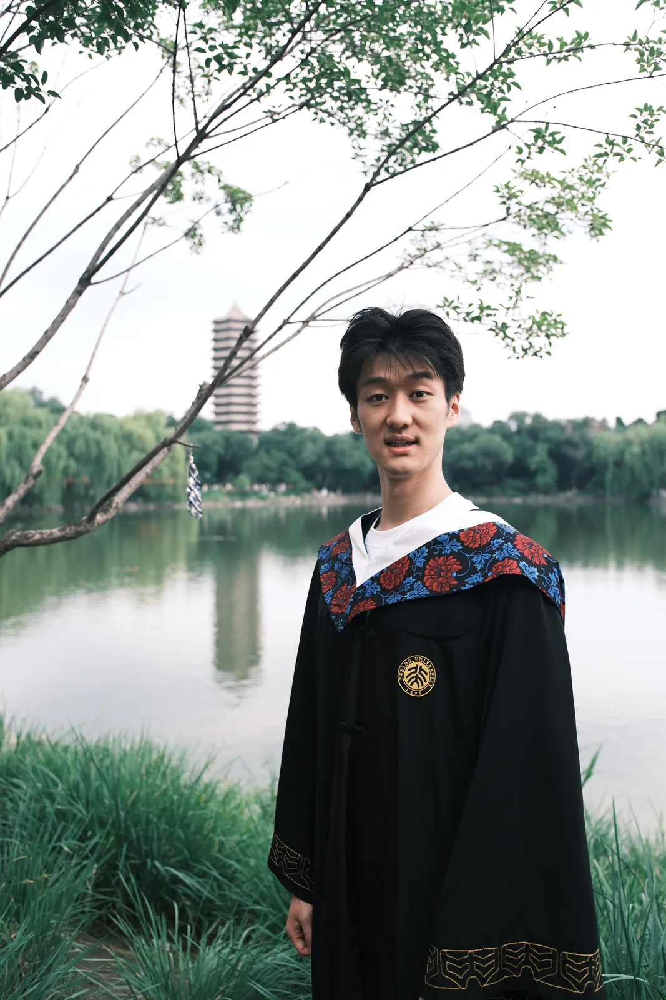

对非卫生援助的媒体报道研究
参与非洲新闻媒体相关报道研究，负责数据筛选。
02 / RESEARCH
北京大学 · 全球卫生方向专硕研一
本科专业背景：预防医学。

PUBLIC HEALTH / GLOBAL HEALTH
我参与过健康政策资料整理、社区现场调查与数据清洗，也在医院和疾控中心实习过。目前在北京大学学习全球卫生。
DATA PROJECT / PYTHON
用 WDBC 公开数据比较 30、10、5 个特征的逻辑回归模型。这是我学习 Python 时完成的课程项目：从数据检查、训练内特征选择，到独立测试和结果解释。
特征减量 · 模型比较 · 可复现分析
EXPERIENCE
参与非洲新闻媒体相关报道研究，负责数据筛选。
参与现场研究，负责数据搜集与清洗。
参与暑期科研项目。
参与政策资料整理。
INTERNSHIPS
北京海淀医院 · 2024.02—2025.01
深圳市疾病预防控制中心 · 2025.06—2025.09
CAMPUS AWARD
北京大学第 32 届挑战杯
五四青年科学奖
KEEP IN TOUCH
篮球、运动，还有生活里好玩的事。
打开抖音，搜索账号 ↗